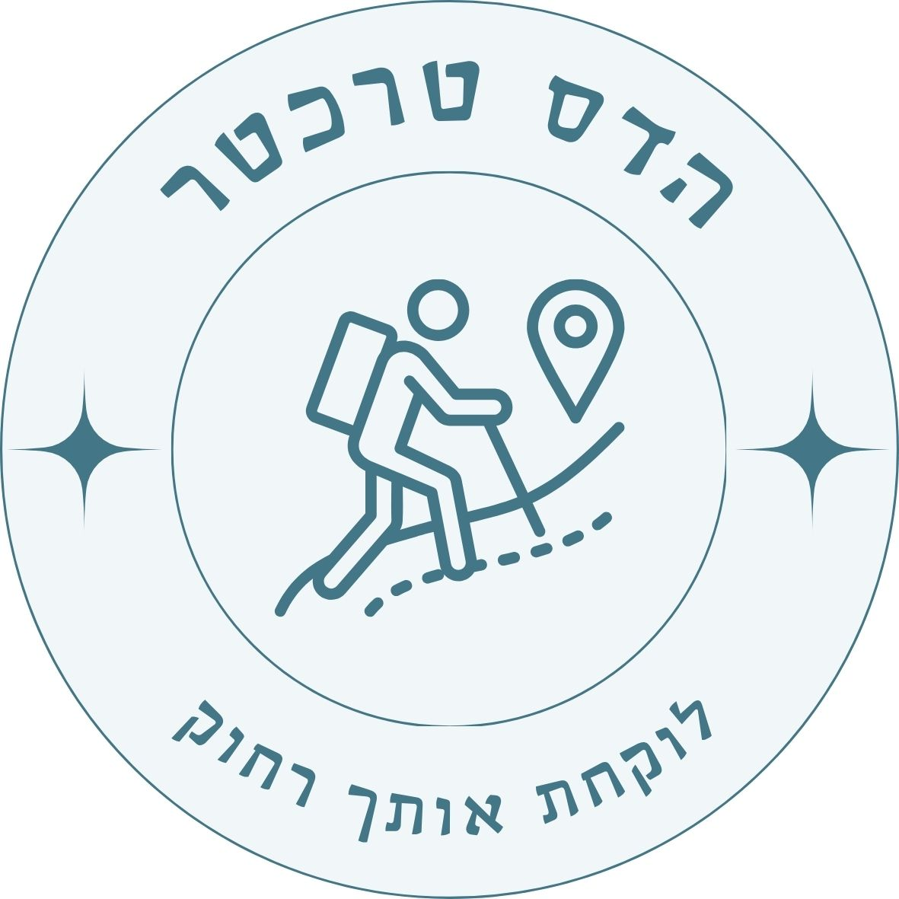

טיול זוגי שנקר בקרקוב
3-6/11/26
תחזית
מקום הלינה
מסעדות כשרות
שקיעה:
16:10 |
מט"ח:
זלוטי 1 = 0.8 ש"ח
אפליקציות חשובות:
מוניות Bolt | Uber
יום שלישי 3/11 נחיתה והיכרות העיר
8:00 הגעה לשדה והמראה
8:00 הגעה לשדה, טרמינל 1
11:00 המראה לקרקוב
14:00 נחיתה ונסיעה לדירה
14:00 נחיתה בקרקוב
15:30 יציאה מהשדה לכיוון הדירה
מוניות בולט מחניון P3 לפי שילוט בטרמינל (Taxi Pick-up)
כתובת בשפה המקומית: Kupa 6, 31-057 Kraków, פולין
קישור למיקום הדירה במפות
16:00-16:30 הגעה לדירה, התרעננות
מניחים מזוודות ויוצאים לחוות את העיר
16:30-17:30 כיכר העיר הגדולה
כיכר העיר הגדולה של קרקוב, דוכנים, שווקים ואווירה
הגעה לכיכר בתח"צ, כ-20 דק'
תשלום נסיעה חד פעמית ל-20 דק', 4 זלוטי
קישור למיקום במפות
18:00-20:00 קניון פקטורי אאוטלט עודפים
קניון אאוטלט למותגי ספורט
כחצי שעה נסיעה ממרכז העיר
מומלץ לקחת מונית
שעות פתיחה 10-21
קישור למיקום במפות
20:30 ארוחת ערב
פירוט מסעדות כשרות בתחתית העמוד
22:00 לילה טוב
יום רביעי 4/11 טיול יום לטבע
9:00 יוצאים לדרך
טיול יום עם נהג פרטי לאזור זקופנה
600 זלוטי, תשלום במזומן!
11:00-13:00 צמרות העצים
מגדל תצפית בגובה צמרות העצים
עלות: 76 זלוטי לאדם
שעות פתיחה: 9-17
קישור למיקום במפות
13:00-13:30 נקודת תצפית יפה על ההרים (אופציונלי)
נקודת עצירה יפה לתמונות
קישור למיקום במפות
14:00-17:00 זקופנה והר גבלוקה
פוניקולר להר גבלוקה
עליה בפוניקולר לראש ההר לתצפית ודוכנים
עלות: 35 זלוטי הלו"ש לאדם
שעות פתיחה: 9-20
קישור למיקום הפוניקולר במפות
שוק איכרים
תוצרת מקומית
כניסה חופשית
שעות פתיחה: 9-19
קישור למיקום השוק במפות
מדרחוב זקופנה
חנויות ואווירה מקומית
כניסה חופשית
קישור למיקום חנות במדרחוב במפות
חזרה לקרקוב
עד 17:00 חזרה לנקודת האיסוף
נסיעה כשעתיים חזרה לקרקוב
19:00-20:30 ארוחת ערב
פירוט מסעדות כשרות בתחתית העמוד
21:00-22:00 שייט לילי על נהר הויסלה (אופציונלי)
שייט לילי בנהר, במשך שעה
עלות: 80 זלוטי לאדם
מומלץ להגיע כ-15 דק' לפני, הליכה של כ-15 דק' מאזור המסעדות הכשרות
שעות פתיחה 10-22
קישור למיקום במפות
יום חמישי 5/11 קרקוב לעומק ושופינג
9:15-12:45 יציאה וסיור רגלי בעיר
9:15 יציאה לסיור
הגעה לנקודה ההתחלה בתח"צ, כ-15 דק'
תשלום נסיעה חד פעמית ל-20 דק', 4 זלוטי
קישור למיקום נקודת התחלה לסיור במפות
9:45-12:45 סיור רגלי בעיר
סיור בעברית עם ניסן בקרקוב העתיקה
עלות 130 זלוטי לאחד, תשלום במזומן
קישור ישירות לניסן בוואטסאפ
13:00-14:00 בית כנסת הרמ"א ובית הקברות העתיק
תפילת מנחה במקום
קבר הרמ"א מיד ביציאה
קבר בעל התוספות יו"ט מצד שמאל עד הסוף
סמוך אליו קבר יוסלה קמצן קדוש
עלות: 15 זלוטי לאדם, תשלום מזומן
שעות פתיחה: 10-18
קישור למיקום במפות
14:30-18:30 שופינג קניון בונרקה
קניון ענק עם כל המותגים
כולל חנות ענקית של פריימרק, טיקיי מקס, ספורה, לגו ועוד
חנות צעצועים מומלצת: Smyk Megastore (קומה שניה)
מומלץ להגיע עם מונית
שעות פתיחה: 10-21
עלות כניסה: חינם, יציאה עם חור בכיס :)
קישור למיקום במפות
19:00 חזרה לדירה והתאוששות
מומלץ במונית
19:30-20:30 ארוחת ערב אחרונה
אריזות ושינה מוקדמת לקראת יציאה לשדה
יום שישי 6/11 חזרה הביתה
2:00-10:15 יציאה לשדה והמראה
2:00 יציאה לשדה התעופה, מומלץ להזמין מונית מראש דרך בולט
2:30 הגעה לשדה
עמדת tax free נמצאת מצד ימין לעמדות הצ'ק אין
5:35 המראה
10:15 חזרה הביתה, ברוכים השבים לישראל!
מסעדות כשרות קרקוב
הכנסת אורחים זולדן